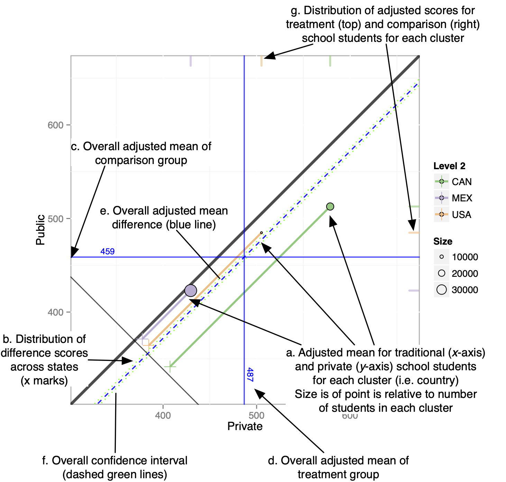
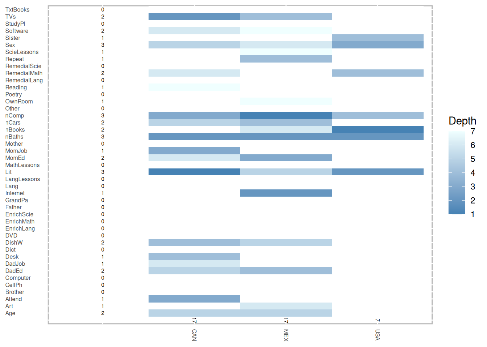
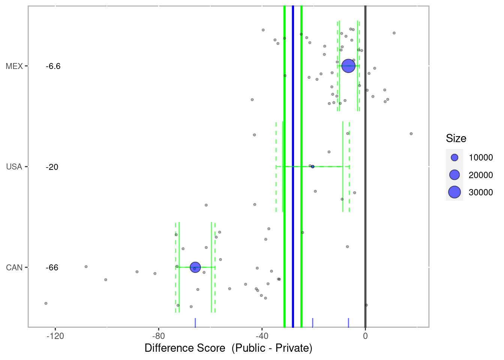

9 Multilevel PSA
library(multilevelPSA)
library(grid)
data(pisana)
data(pisa.colnames)
data(pisa.psa.cols)
str(pisana)## 'data.frame': 66548 obs. of 65 variables:
## $ Country : chr "Canada" "Canada" "Canada" "Canada" ...
## $ CNT : chr "CAN" "CAN" "CAN" "CAN" ...
## $ SCHOOLID: Factor w/ 1534 levels "00001","00002",..: 1 1 1 1 1 1 1 1 1 1 ...
## $ ST01Q01 : Factor w/ 0 levels: NA NA NA NA NA NA NA NA NA NA ...
## $ ST04Q01 : Factor w/ 2 levels "Female","Male": 1 2 2 1 2 2 2 1 1 2 ...
## $ ST05Q01 : Factor w/ 3 levels "No","Yes, more than one year",..: 2 2 3 2 1 1 3 3 2 3 ...
## $ ST06Q01 : num 4 4 4 4 5 5 5 4 4 5 ...
## $ ST07Q01 : Factor w/ 3 levels "No, never","Yes, once",..: 1 1 1 1 1 1 2 1 1 1 ...
## $ ST08Q01 : Factor w/ 2 levels "No","Yes": 2 2 2 2 2 2 2 2 2 2 ...
## $ ST08Q02 : Factor w/ 2 levels "No","Yes": 2 2 2 1 2 2 1 2 2 2 ...
## $ ST08Q03 : Factor w/ 2 levels "No","Yes": 1 2 2 2 1 1 1 2 2 2 ...
## $ ST08Q04 : Factor w/ 2 levels "No","Yes": 2 2 1 2 2 2 2 1 2 1 ...
## $ ST08Q05 : Factor w/ 2 levels "No","Yes": 1 1 1 1 1 1 1 1 1 1 ...
## $ ST08Q06 : Factor w/ 2 levels "No","Yes": 1 1 1 1 1 1 1 1 1 1 ...
## $ ST10Q01 : Factor w/ 5 levels "<ISCED level 1>",..: 3 3 3 3 3 3 3 3 3 3 ...
## $ ST12Q01 : Factor w/ 4 levels "Looking for work",..: 3 3 3 3 3 3 3 3 4 3 ...
## $ ST14Q01 : Factor w/ 5 levels "<ISCED level 1>",..: 3 3 3 3 3 3 3 3 3 3 ...
## $ ST16Q01 : Factor w/ 4 levels "Looking for work",..: 3 3 3 3 3 3 3 3 4 3 ...
## $ ST19Q01 : Factor w/ 2 levels "Another language",..: 2 2 2 1 2 2 2 2 2 1 ...
## $ ST20Q01 : Factor w/ 2 levels "No","Yes": 2 2 2 2 2 2 2 2 2 2 ...
## $ ST20Q02 : Factor w/ 2 levels "No","Yes": 2 2 2 2 2 2 2 2 2 2 ...
## $ ST20Q03 : Factor w/ 2 levels "No","Yes": 2 2 2 2 2 2 2 2 2 2 ...
## $ ST20Q04 : Factor w/ 2 levels "No","Yes": 2 2 2 2 2 2 2 2 2 2 ...
## $ ST20Q05 : Factor w/ 2 levels "No","Yes": 2 2 2 2 1 2 2 2 2 1 ...
## $ ST20Q06 : Factor w/ 2 levels "No","Yes": 2 2 2 2 2 2 2 2 2 2 ...
## $ ST20Q07 : Factor w/ 2 levels "No","Yes": 2 2 1 2 1 1 1 1 1 1 ...
## $ ST20Q08 : Factor w/ 2 levels "No","Yes": 2 2 1 2 1 2 1 1 1 1 ...
## $ ST20Q09 : Factor w/ 2 levels "No","Yes": 2 2 2 2 2 2 2 1 1 2 ...
## $ ST20Q10 : Factor w/ 2 levels "No","Yes": 2 2 2 2 2 2 2 2 2 1 ...
## $ ST20Q12 : Factor w/ 2 levels "No","Yes": 2 2 2 2 2 2 2 2 2 2 ...
## $ ST20Q13 : Factor w/ 2 levels "No","Yes": 2 2 1 2 2 2 2 2 2 2 ...
## $ ST20Q14 : Factor w/ 2 levels "No","Yes": 2 2 2 2 2 2 2 2 2 2 ...
## $ ST21Q01 : Factor w/ 4 levels "None","One","Three or more",..: 3 3 3 3 3 4 4 3 3 3 ...
## $ ST21Q02 : Factor w/ 4 levels "None","One","Three or more",..: 3 3 3 3 4 3 2 3 3 3 ...
## $ ST21Q03 : Factor w/ 4 levels "None","One","Three or more",..: 3 2 2 3 4 4 4 4 3 3 ...
## $ ST21Q04 : Factor w/ 4 levels "None","One","Three or more",..: 4 4 2 3 4 3 2 4 4 3 ...
## $ ST21Q05 : Factor w/ 4 levels "None","One","Three or more",..: 2 4 4 3 3 4 2 4 4 3 ...
## $ ST22Q01 : Factor w/ 6 levels "0-10 books","101-200 books",..: 5 5 1 5 4 3 2 5 4 1 ...
## $ ST23Q01 : Factor w/ 5 levels "1 to 2 hours a day",..: 5 2 4 2 4 4 3 4 3 4 ...
## $ ST31Q01 : Factor w/ 2 levels "No","Yes": 1 1 1 1 1 1 1 1 1 1 ...
## $ ST31Q02 : Factor w/ 2 levels "No","Yes": 1 1 1 1 1 1 1 1 1 2 ...
## $ ST31Q03 : Factor w/ 2 levels "No","Yes": 1 1 1 1 1 1 1 1 1 1 ...
## $ ST31Q05 : Factor w/ 2 levels "No","Yes": 1 1 1 1 1 1 1 1 2 1 ...
## $ ST31Q06 : Factor w/ 2 levels "No","Yes": 1 1 1 1 1 1 1 1 2 1 ...
## $ ST31Q07 : Factor w/ 2 levels "No","Yes": 2 1 1 1 1 1 1 1 2 1 ...
## $ ST32Q01 : Factor w/ 5 levels "2 up to 4 Hours a week",..: 4 4 5 4 4 4 4 4 4 4 ...
## $ ST32Q02 : Factor w/ 5 levels "2 up to 4 Hours a week",..: 5 4 5 4 4 4 4 4 4 5 ...
## $ ST32Q03 : Factor w/ 5 levels "2 up to 4 Hours a week",..: 4 4 5 4 4 4 4 4 4 5 ...
## $ PV1MATH : num 474 673 348 518 420 ...
## $ PV2MATH : num 466 632 372 537 533 ...
## $ PV3MATH : num 438 571 397 511 441 ...
## $ PV4MATH : num 458 685 445 527 468 ...
## $ PV5MATH : num 471 586 375 490 420 ...
## $ PV1READ : num 503 613 390 570 407 ...
## $ PV2READ : num 492 578 421 542 452 ...
## $ PV3READ : num 522 553 442 527 434 ...
## $ PV4READ : num 509 594 410 584 423 ...
## $ PV5READ : num 460 564 372 518 416 ...
## $ PV1SCIE : num 460 686 378 500 417 ...
## $ PV2SCIE : num 444 589 399 575 556 ...
## $ PV3SCIE : num 484 593 388 505 471 ...
## $ PV4SCIE : num 489 643 444 540 436 ...
## $ PV5SCIE : num 435 646 385 476 479 ...
## $ PUBPRIV : Factor w/ 2 levels "Private","Public": 2 2 2 2 2 2 2 2 2 2 ...
## $ STRATIO : num 14.4 14.4 14.4 14.4 14.4 ...
table(pisana$CNT, pisana$PUBPRIV, useNA='ifany')##
## Private Public
## CAN 1645 21484
## MEX 4048 34138
## USA 345 4888
prop.table(table(pisana$CNT, pisana$PUBPRIV, useNA='ifany'), 1) * 100##
## Private Public
## CAN 7.112283 92.887717
## MEX 10.600744 89.399256
## USA 6.592777 93.407223

Figure 4.1: Annotated multilevel PSA assessment plot. This plot compares private schools (x- axis) against public schools (y-axis) for North America from the Programme of International Student Assessment.
Phase I
Use conditional inference trees from the party package
mlctree <- mlpsa.ctree(pisana[,c('CNT','PUBPRIV',pisa.psa.cols)],
formula=PUBPRIV ~ ., level2='CNT')##
|
| | 0%
|
|======================= | 33%
|
|=============================================== | 67%
|
|======================================================================| 100%
pisana.party <- getStrata(mlctree, pisana, level2='CNT')

Figure 9.1: Tree heat map showing relative importance of covariates used in each tree
#NOTE: This is not entirely correct but is sufficient for visualization purposes
# See mitools package for combining multiple plausible values.
pisana.party$mathscore <- apply(pisana.party[,paste0('PV',1:5,'MATH')],1,sum)/5
pisana.party$readscore <- apply(pisana.party[,paste0('PV',1:5,'READ')],1,sum)/5
pisana.party$sciescore <- apply(pisana.party[,paste0('PV',1:5,'SCIE')],1,sum)/5Phase II
results.psa.math <- mlpsa(response = pisana.party$mathscore,
treatment = pisana.party$PUBPRIV,
strata = pisana.party$strata,
level2 = pisana.party$CNT, minN=5)
# summary(results.psa.math)
results.psa.math$level2.summary[,c('level2','n','Private','Private.n','Public',
'Public.n','diffwtd','ci.min','ci.max','df')]## level2 n Private Private.n Public Public.n diffwtd ci.min
## 1 CAN 22718 578.6262 1625 512.7997 21093 -65.826528 -72.08031
## 2 MEX 38134 429.5247 4044 422.9746 34090 -6.550102 -10.04346
## 3 USA 5233 505.2189 345 484.8212 4888 -20.397746 -32.03916
## ci.max df
## 1 -59.572751 22652
## 2 -3.056743 38050
## 3 -8.756334 5213
# Confidence interval
results.psa.math$overall.ci## -31.30
## -24.75
# Effect Size
results.psa.math$overall.ci / sd(pisana.party$mathscore)## -0.35
## -0.28
plot(results.psa.math)
Figure 9.2: Multilevel PSA assessment plot
mlpsa.difference.plot(results.psa.math)

Figure 9.3: Multilevel PSA difference plot